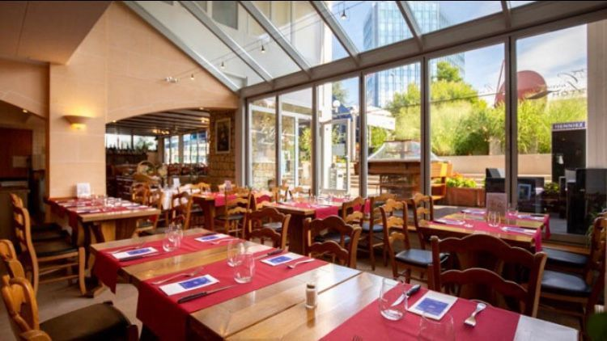
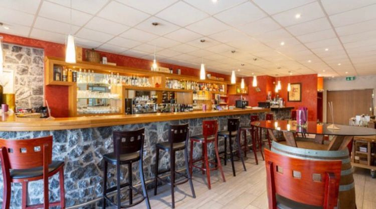
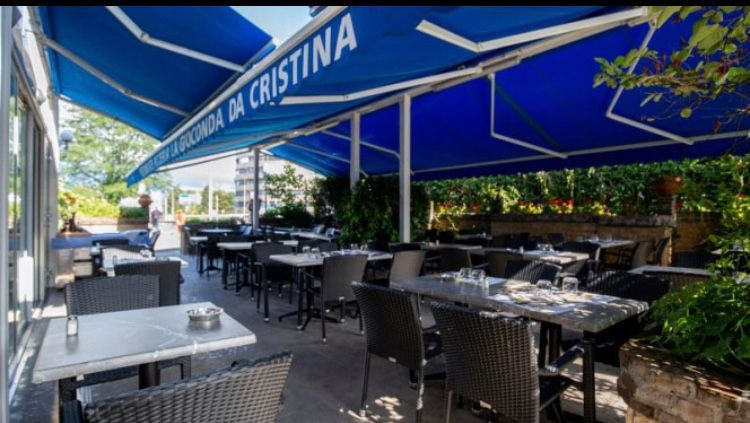
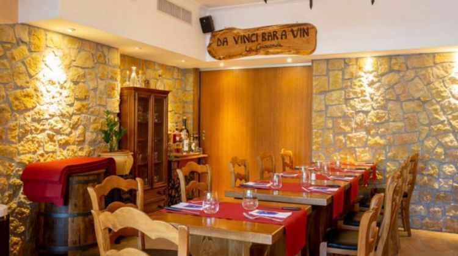

🧀
Risotto à la meule
Notre risotto est préparé en salle et flambé dans une meule de parmesan, pour une onctuosité incomparable.
Cointrin · Genève
Votre restaurant napolitain à Cointrin — cuisine italienne authentique, pâtes fraîches et pizzas cuites au feu de bois.

Située à Cointrin, notre maison représente une véritable part de Naples au sein de Genève. Dans un cadre chaleureux et lumineux, nous vous accueillons midi et soir pour une parenthèse gourmande aux saveurs authentiques de l'Italie.
Produits frais, recettes traditionnelles et accueil familial : chaque assiette est préparée avec passion par notre équipe.
Notre cuisineDes classiques napolitains préparés sous vos yeux, avec des produits choisis.
Notre risotto est préparé en salle et flambé dans une meule de parmesan, pour une onctuosité incomparable.
Des pâtes fraîches préparées à la commande, dans la plus pure tradition artisanale italienne.
Une sélection de vins italiens pour accompagner chaque plat et sublimer votre repas.
Salle vitrée, bar à vin Da Vinci et terrasse ensoleillée.


